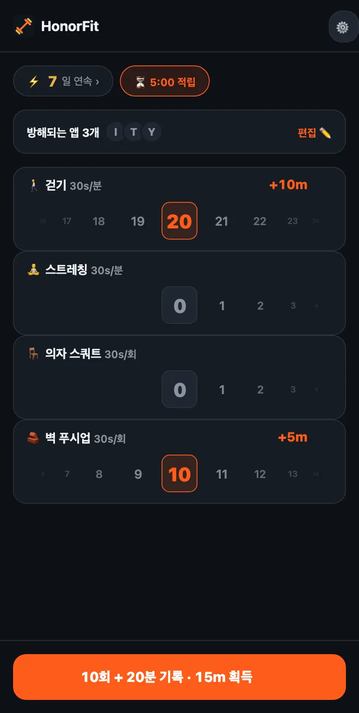

푸시업이 힘들다면? 앱 잠금을 푸는 저강도 운동
안녕하세요 여러분! HonorFit은 주로 팔굽혀펴기 앱 차단 앱으로 알려져 있어요. 운동하고 직접 기록할 때까지 앱이 잠겨 있는 거죠. 그런데 손목이나 어깨, 무릎이 푸시업을 별로 안 좋아하거나, 하루 종일 책상 앞에 있거나, 지금은 그냥 푸시업을 할 상황이 아니라면, 그것도 완전히 괜찮아요.
저한테 푸시업 자체가 목적이었던 적은 없어요. 목적은 나와 스크롤 사이에 작은 과속 방지턱을 하나 두는 거고, 그게 마침 몸에도 좋은 거예요. 동네 한 바퀴 걷는 것도 똑같이 그 역할을 해요. 그래서 내가 실제로 할 수 있는 것들로 HonorFit을 설정하는 법을 알려 드릴게요.
기본 운동부터
처음부터 들어 있는 운동은 네 가지예요: 푸시업, 윗몸일으키기, 턱걸이, 스쿼트. 이 중에서 제일 순한 건 스쿼트고, 1회에 30초예요.
그리고 양심 시스템이니까, 스쿼트 자세를 검사하는 사람은 아무도 없어요. 제대로 된 스쿼트가 너무 힘들면 의자에서 일어났다가 다시 앉는 것도 1회예요. 푸시업도 마찬가지로, 벽이나 주방 조리대를 짚고 해도 돼요. 1회가 뭔지는 내가 정하고, 정직하게 기록하기만 하면 돼요.
내가 고르기 (3개까지 무료)
버전 1.15.0부터는 운동 이름을 바꾸고, 삭제하고, 각각 얼마를 얻을지 정하고, 나만의 운동을 3개까지 추가하는 게 전부 무료예요. Pro(미국 기준 월 3달러 또는 한 번 결제 19.99달러. 가격은 나라와 통화에 따라 다르고, 스토어에서 내 지역 가격이 표시돼요)에서는 원하는 만큼 추가할 수 있어요. 홈 화면의 톱니바퀴를 누르고 운동 카드로 들어가면 돼요. 편집 화면의 모든 단계는 여기에 정리해 뒀어요. 제가 눈여겨볼 만한 것들은 이런 거예요.
시간제 운동 (분 단위로 기록)
어떤 운동이든 분으로 바꾸거나, ⏱ 표시가 있는 추천 운동을 누르면 돼요. 여기에 잘 맞는 것들:
- 🚶 걷기. 제가 제일 좋아하는 거예요. 아마 이보다 쉬운 건 없을 거예요.
- 🧘 요가나 🤸 필라테스. 실제로 하는 게 스트레칭에 가깝다면 스트레칭이라는 운동을 추가해도 돼요.
- 🏊 수영과 🚴 사이클. 둘 다 관절에 부담이 적어요.
- 🪷 명상. 운동은 아니지만 목록에 있어요. 조용한 10분이면 틱톡 10분이랑 바꾸기에 꽤 괜찮은 거래예요.
시간제 운동은 1분당 앱 시간 30초로 시작해요. 그래서 20분 걸으면 10분을 얻어요. 휠은 1분 단위로 세고, 한 번에 100분까지 기록할 수 있어요.
책상에서도 할 수 있는 동작 (횟수로 기록)
＋ 운동 추가를 누르고 이름을 입력하세요. 사무실이나 좁은 집에서도 도구 없이 할 수 있는 것 몇 가지:
- 의자 스쿼트(앉았다 일어서기): 의자에서 일어났다가 다시 앉기.
- 벽 푸시업이나 책상 푸시업: 벽이나 튼튼한 책상을 짚고 하는 푸시업. 짚는 곳이 높을수록 쉬워요.
- 카프 레이즈: 까치발을 들었다가 내리기. 전자레인지 기다리면서도 할 수 있어요.
- 제자리 걷기: 추천 운동의 하이 니즈를 천천히 하는 느낌이에요. 원하면 이름을 바꾸세요.
- 힙 브릿지와 케겔 운동: 조용하고 도구도 필요 없고, 케겔 운동은 회의 중에 해도 아무도 몰라요. 이 두 가지로만 글 하나를 따로 썼어요.
버티기 운동 (플랭크, 월 싯)
분 휠은 1분 단위로 세니까, 20초짜리 플랭크는 잘 안 맞아요. 버티기 운동은 횟수로 두고, ‘20초 버티기 1번’처럼 1회가 뭔지 정하는 걸 추천해요. 플랭크랑 월 싯 둘 다 추천 목록에 있어요.
각각 얼마로 정하면 좋을까?
새 운동은 1회당 30초로 시작하고, 5초씩 올리거나 내릴 수 있어요. 참고할 만한 출발점:
| 운동 | 기록 방식 | 얻는 시간 | 예시 |
|---|---|---|---|
| 🚶 걷기 | 분 | 1분마다 30초 | 20분 걷기 = 10분 |
| 🧘 스트레칭 | 분 | 1분마다 30초 | 10분 = 5분 |
| 🪑 의자 스쿼트 | 횟수 | 1회마다 30초 | 10회 = 5분 |
| 🧱 벽 푸시업 | 횟수 | 1회마다 30초 | 10회 = 5분 |
| 카프 레이즈 | 횟수 | 1회마다 10~15초 | 15초로 20회 = 5분 |
| 플랭크 | 횟수 (1회 = 20초 버티기) | 1회마다 1분 | 3번 버티기 = 3분 |
어디까지나 제가 공평하다고 느끼는 값일 뿐이에요. 정답은 숫자를 부풀리지 않고 실제로 낼 수 있는 값이에요. 가장 만들고 싶은 습관이 걷기라면, 1분당 1분처럼 더 높게 쳐 줘도 좋아요.

그대로 가져다 쓸 조합
- 책상 앞에 붙어 있는 날: 의자 스쿼트, 벽 푸시업, 카프 레이즈, 걷기.
- 순하게: 걷기, 스트레칭, 의자 스쿼트, 벽 푸시업(위 스크린샷이 이거예요).
- 차분하게: 걷기, 요가, 명상.
- 조용한 집에서: 힙 브릿지, 케겔 운동, 의자 스쿼트, 걷기.
운동마다 홈 화면에 휠이 하나씩 생기니까, 서너 개로 유지하는 걸 추천해요. 무료 버전에서도 기본 운동 이름을 바꾸고(스쿼트는 의자 스쿼트로, 푸시업은 벽 푸시업으로) 나머지를 나만의 운동 3개로 추가하면 네 개를 맞출 수 있어요.
그리고 부상이나 통증, 건강 문제가 있다면 뭐가 괜찮은지 의사나 물리치료사와 꼭 상담하세요. 저는 앱 차단 앱을 만드는 사람이라, 무릎 얘기를 물어볼 사람은 아니에요 ㅋㅋ
HonorFit Blocker는 iPhone과 Android용 무료 앱 차단 앱이에요. 양심 시스템, 카메라 없음, 모든 데이터는 내 폰 안에만 있어요. 시간제 운동과 나만의 운동 3개까지는 무료고, Pro에서는 무제한이에요. 모두에게 맞는 앱은 아니지만, 마음에 들어 하실 분도 있을 거예요!